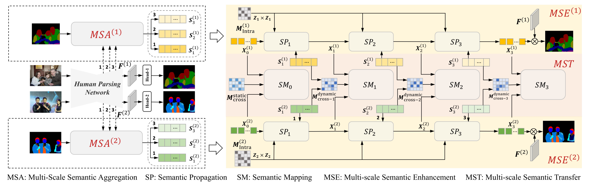
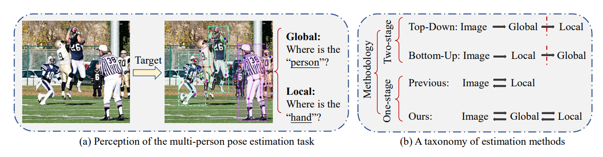
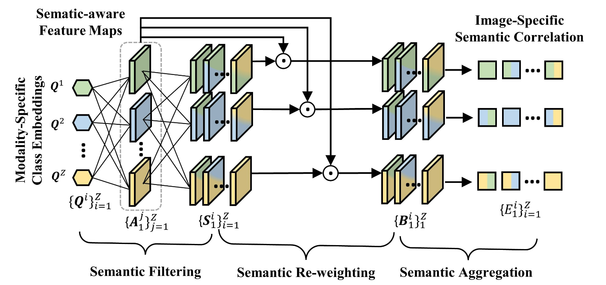
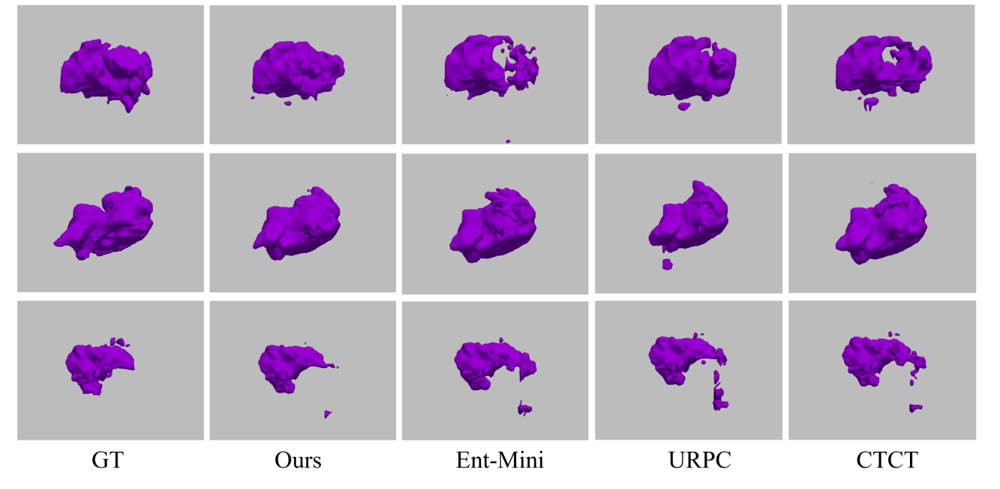

Jie Yang 杨杰PhD Student
Computer and Information Engineering
|
 |


Biography
I am a second-year PhD student in the School of Science and Engineering, The Chinese University of Hong Kong, Shenzhen, co-supervised by Prof. Ruimao Zhang and Prof. Zhen Li. Currently, I am an intern of computer vision at International Digital Economy Academy (IDEA), advised by Researcher Ailing Zeng and Prof. Lei Zhang.
My research interest lies in human-centric visual understanding, perception and generation.
News
- [2023.03.02] Two papers are accepted by MIDL2023 and one is rated as the oral presentation.
- [2023.02.28] One paper is accepted by CVPR2023.
- [2023.01.21] One paper is accepted by ICLR2023.
- [2022.09.17] One paper is accepted by NeurIPS2022.
Selected Publications [Google Scholar]
|  | Semantic Human Parsing via Scalable Semantic Transfer over Multiple Label Domains Jie Yang, Chaoqun Wang, Zhen Li, Junle Wang, Ruimao Zhang*. Proc. of IEEE International Conference on Computer Vision and Pattern Recognition (CVPR), 2023. |
|  | Explicit Box Detection Unifies End-to-End Multi-Person Pose Estimation |
|  | Toward Unpaired Multi-modal Medical Image Segmentation via Learning Structured Semantic Consistency Jie Yang, Ye Zhu, Chaoqun Wang, Zhen Li, Ruimao Zhang*. Proc. of Conference on Medical Imaging with Deep Learning (MIDL), 2023. |
|  | Inherent Consistent Learning for Accurate Semi-supervised Medical Image Segmentation Ye Zhu, Jie Yang, Siqi Liu, Ruimao Zhang*. Proc. of Conference on Medical Imaging with Deep Learning (MIDL), Oral, 2023. |
Honors & Awards
-
National Scholarship, 2018
© Jie Yang | Last updated: March 2023